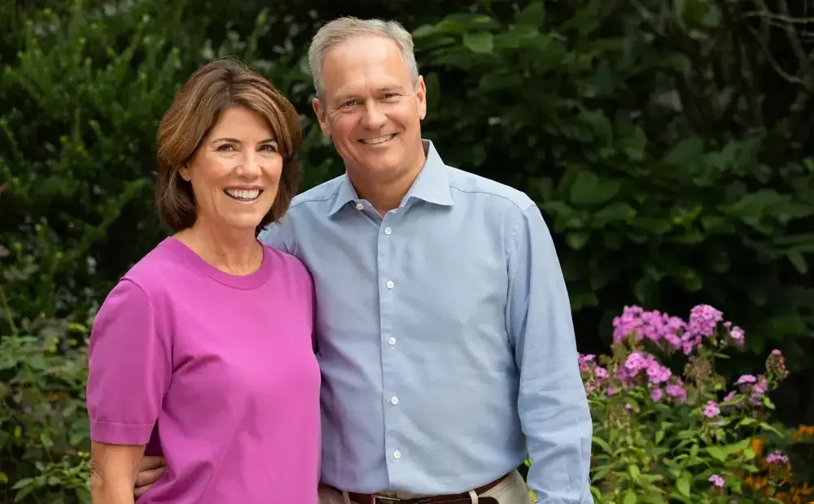
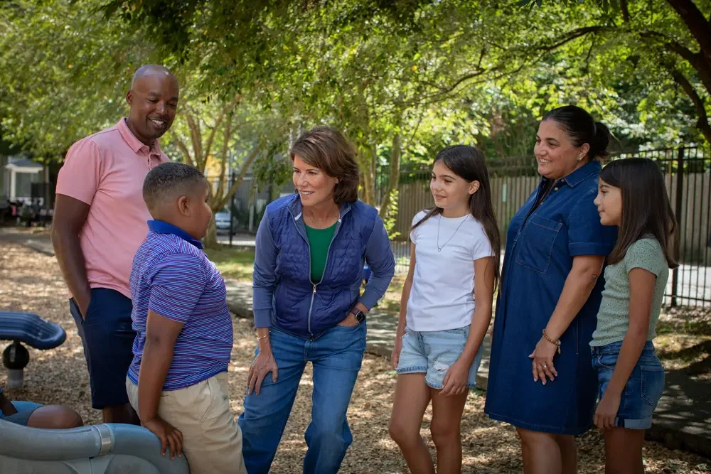
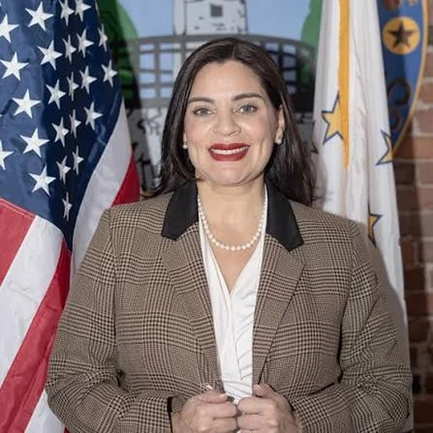
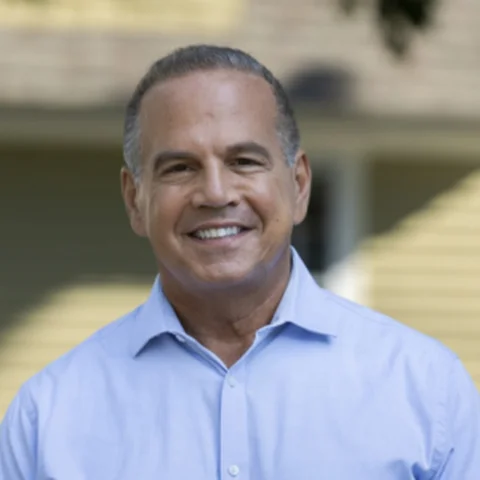
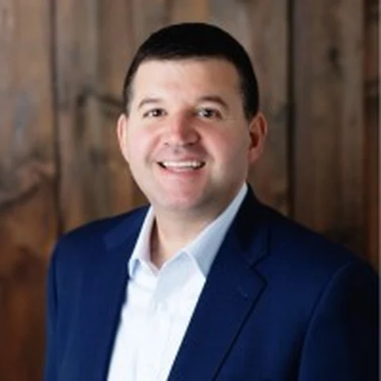

Conozca al equipo
Las personas que dirigen la transición
La gobernadora electa y el equipo de liderazgo que preparan la administración para enero.


Gobernadora electa
Conozca a Helena
La gobernadora electa Helena Buonanno Foulkes es una rhodeislandesa de toda la vida, esposa desde hace 36 años, madre de cuatro hijos, abuela y sobreviviente de cáncer. Durante 25 años ascendió en CVS hasta llegar a ser presidenta de su división minorista.
Como presidenta de CVS Pharmacy, Helena trabajó para que los consumidores pagaran los precios más bajos posibles por sus medicamentos recetados y retiró los productos de tabaco de los estantes —aunque el tabaco generaba $2 mil millones en ingresos— porque cree que proteger la salud de las personas es más importante que las ganancias.
Helena ha trabajado arduamente para mejorar nuestro estado: se asoció con la alcaldía de Central Falls para mejorar sus escuelas públicas, ha combatido la falta de vivienda y la violencia doméstica como miembro de juntas directivas y voluntaria en organizaciones sin fines de lucro de Rhode Island, y se reúne con frecuencia con los habitantes de Rhode Island para escuchar sus preocupaciones.
Como gobernadora, Helena seguirá comprometida a mejorar la vida de cada habitante de Rhode Island.
Equipo de liderazgo de la transición
Bari Harlam
Copresidenta de la Transición

Alcaldesa Maria Rivera
Copresidenta de la Transición

David Cicilline
Copresidente de la Transición
RJ Kermes
Director Adjunto de Operaciones de la Transición

Jon Romano
Asesor Principal